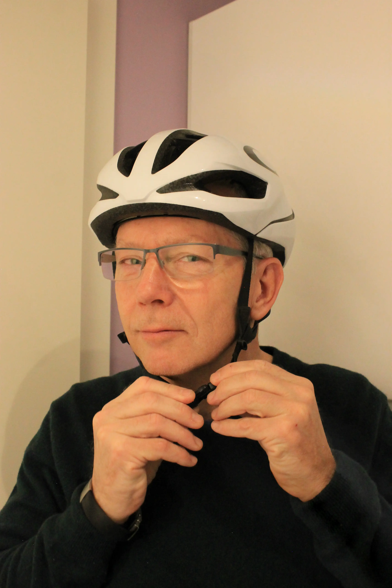
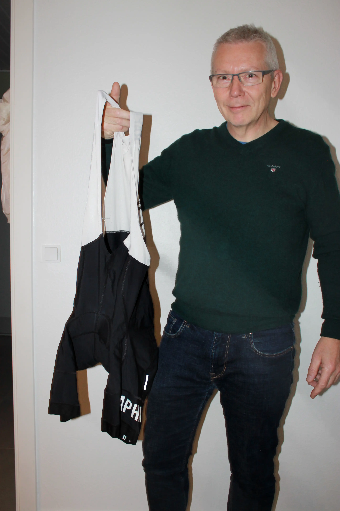
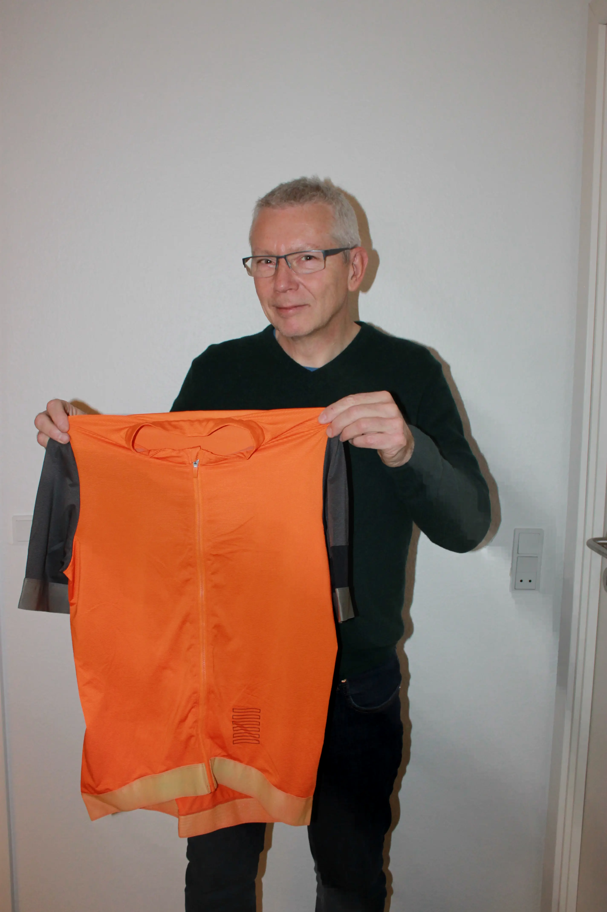

Præsentation
Hør det eksklusive interview med den 58-årige Jesper Jessen. Hvad er hans passion?
Man hører tit om folk der cykler, især i Danmark, og Tour de France er også virkelig anerkendt
Dog er det altid udendørs. Findes der andre steder at cykle? Find ud af det i interviewet!


